Don: One for All. Destroza a los villanos con una gran fuerza heredada.
Afiliación: Héroe profesional / Profesor Clase de Héroe de la Preparatoria U.A
Cumpleaños: 6/10
Altura: 220 cm
Tipo de sangre: A
Le gusta: Cedros de Yakushima
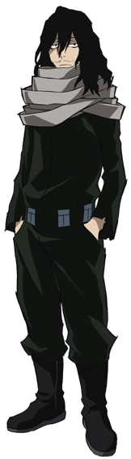
Eraser Head (Shota Aizawa):
Don: Borrado. Puede borrar los dones de cualquiera que esté en su campo de visión.
Afiliación: Profesor Clase de Héroe de la Preparatoria U.A
Cumpleaños: 11/8
Altura: 183 cm
Tipo de sangre: B
Le gusta: Gatos
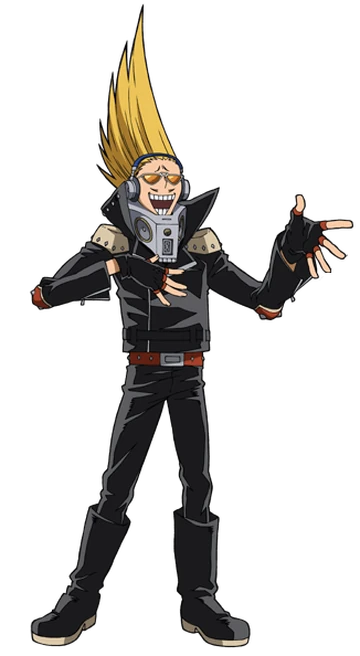
Present Mic (Hizashi Yamada):
Don: Voz. Al hablar en un volumen muy alto, puede atacar con ondas de sonido o transmitir sonido en un área amplia.
Afiliación: Profesor Clase de Héroe de la Preparatoria U.A
Cumpleaños: 7/7
Altura: 185 cm
Tipo de sangre: B
Le gusta: Radio
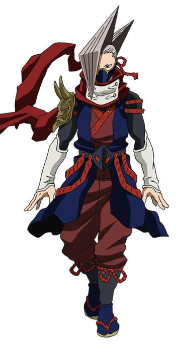
Edgeshot (Shinya Kamihara):
Don: Cuerpo de papel. Puede estirar su cuerpo hasta el grosor de una hoja de papel.
Afiliación: Héroe Profesional
Cumpleaños: 2/22
Altura: 170 cm
Tipo de sangre: A
Le gusta: Bolas de arroz
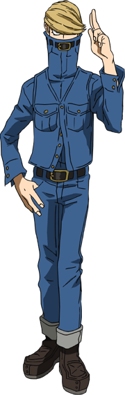
Best Jeanist (Tsunagu Hakamada)
Don: Maestro de la fibra. Puede manipular libremente los textiles.
Afiliación: Héroe Profesional
Cumpleaños: 10/5
Altura: 190 cm
Tipo de sangre: AB
Le gusta: Lobos
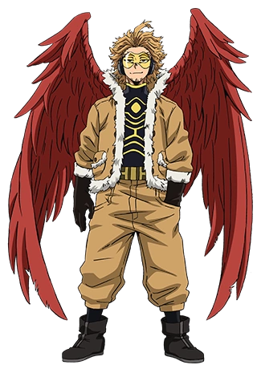
Hawks (Keigo Takami):
Don: Alas feroces. Puede manipular las plumas de su espalda a su voluntad, también puede dispararlas o transformarlas.
Afiliación: Héroe Profesional
Cumpleaños: 12/28
Altura: 172 cm
Tipo de sangre: B
Le gusta: Yakitori
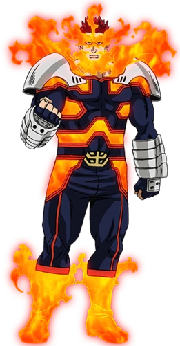
Endeavor (Enji Todoroki):
Don: Llama infernal. Puede producir llamas de alta temperatura con su cuerpo.
Afiliación: Héroe Profesional
Cumpleaños: 8/8
Altura: 195 cm
Tipo de sangre: AB
Le gusta: Kudzu mochi
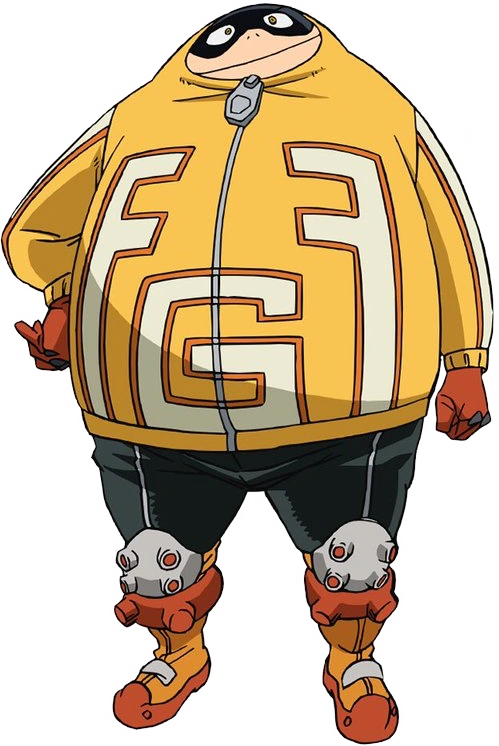
Fatgum (Taishiro Toyomitsu):
Don: Absorción. Con la grasa acumulada de su cuerpo puede absorberlo todo, incluso ataques.
Afiliación: Héroe Profesional
Cumpleaños: 8/8
Altura: 250 cm
Tipo de sangre: O
Le gusta: Comida
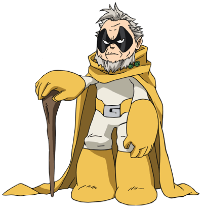
Gran Torino (Sorahiko Torino):
Don: Jet. Puede moverse libremente en el aire con propulsión de jet utilizando el aire que sale de las plantas de sus pies.
Afiliación: Héroe Profesional
Cumpleaños: 1/28
Altura: 120 cm
Tipo de sangre: B
Le gusta: Taiyaki
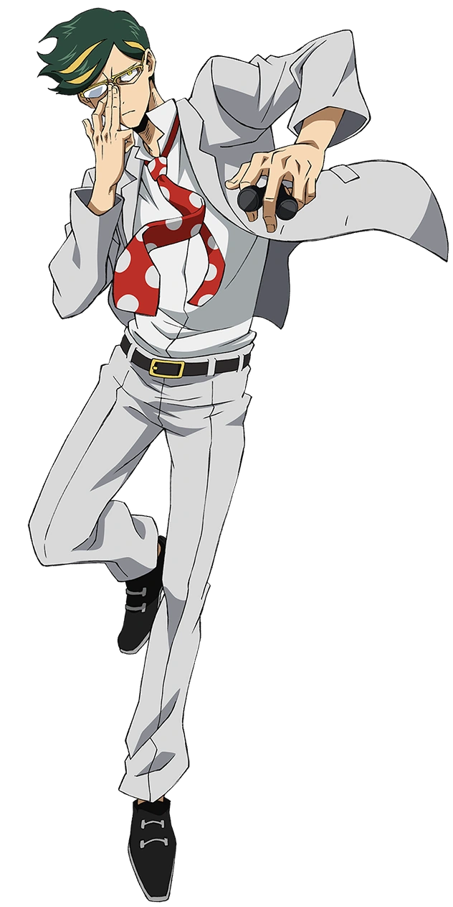
Sir Nighteye (Mirai Sasaki):
Don: Previsión. Puede ver lo siguiente que hará su objetivo por una hora.
Afiliación: Héroe Profesional
Cumpleaños: 1/2
Altura: 200 cm
Tipo de sangre: AB
Le gusta: Heroes, All Might
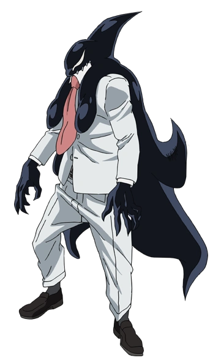
Gang Orca (Kugo Sakamata):
Don: Orcinus. Puede hacer lo mismo que una orca ya sea en tierra o agua.
Afiliación: Héroe Profesional
Cumpleaños: 10/29
Altura: 202 cm
Tipo de sangre: O
Le gusta: Personas fuertes
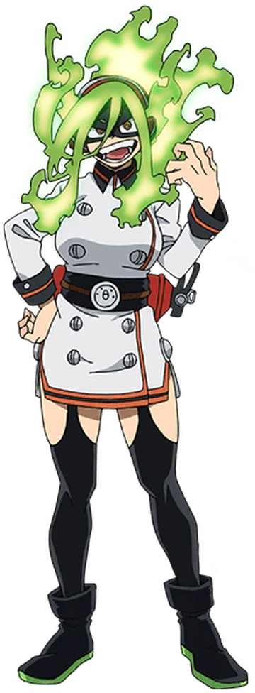
Burnin (Moe Kamiji):
Don: Pelo ardiente. Puede tomar su cabello y arrojarlo a sus enemigos en forma de flamas.
Afiliación: Heroe Profesional
Cumpleaños: 1/18
Altura: 169 cm
Tipo de sangre: Desconocido
Le gusta: Festivales